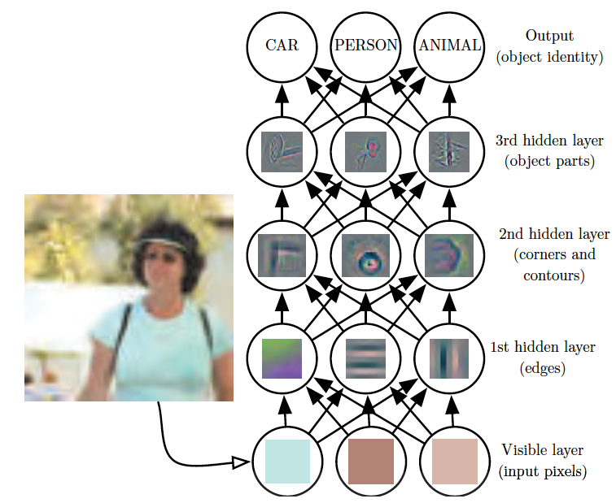
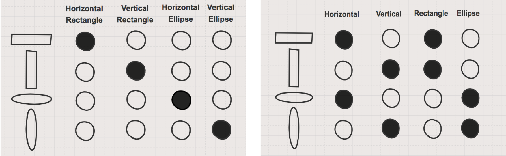
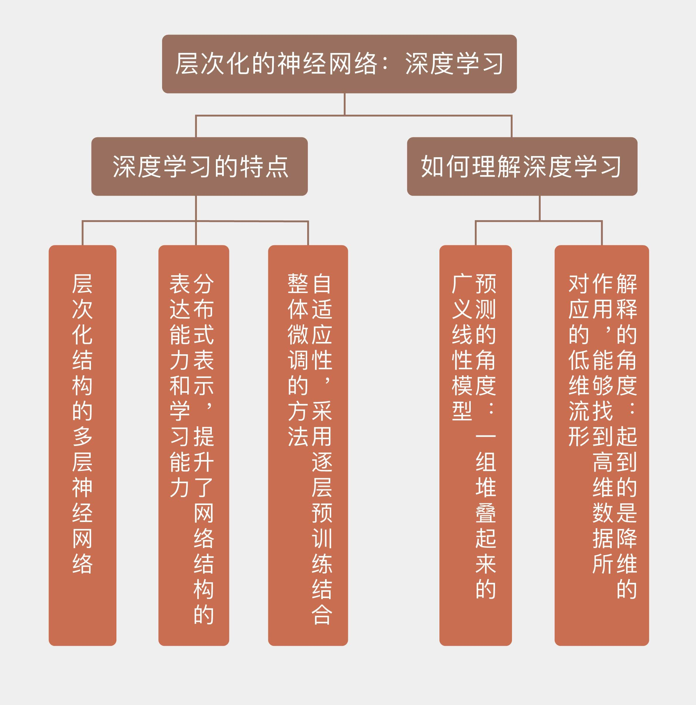

- 00 开篇词 打通修炼机器学习的任督二脉.md.html
- 01 频率视角下的机器学习.md.html
- 02 贝叶斯视角下的机器学习.md.html
- 03 学什么与怎么学.md.html
- 04 计算学习理论.md.html
- 05 模型的分类方式.md.html
- 06 模型的设计准则.md.html
- 07 模型的验证方法.md.html
- 08 模型的评估指标.md.html
- 09 实验设计.md.html
- 10 特征预处理.md.html
- 11 基础线性回归：一元与多元.md.html
- 12 正则化处理：收缩方法与边际化.md.html
- 13 线性降维：主成分的使用.md.html
- 14 非线性降维：流形学习.md.html
- 15 从回归到分类：联系函数与降维.md.html
- 16 建模非正态分布：广义线性模型.md.html
- 17 几何角度看分类：支持向量机.md.html
- 18 从全局到局部：核技巧.md.html
- 19 非参数化的局部模型：K近邻.md.html
- 20 基于距离的学习：聚类与度量学习.md.html
- 21 基函数扩展：属性的非线性化.md.html
- 22 自适应的基函数：神经网络.md.html
- 23 层次化的神经网络：深度学习.md.html
- 24 深度编解码：表示学习.md.html
- 25 基于特征的区域划分：树模型.md.html
- 26 集成化处理：Boosting与Bagging.md.html
- 27 万能模型：梯度提升与随机森林.md.html
- 28 最简单的概率图：朴素贝叶斯.md.html
- 29 有向图模型：贝叶斯网络.md.html
- 30 无向图模型：马尔可夫随机场.md.html
- 31 建模连续分布：高斯网络.md.html
- 32 从有限到无限：高斯过程.md.html
- 33 序列化建模：隐马尔可夫模型.md.html
- 34 连续序列化模型：线性动态系统.md.html
- 35 精确推断：变量消除及其拓展.md.html
- 36 确定近似推断：变分贝叶斯.md.html
- 37 随机近似推断：MCMC.md.html
- 38 完备数据下的参数学习：有向图与无向图.md.html
- 39 隐变量下的参数学习：EM方法与混合模型.md.html
- 40 结构学习：基于约束与基于评分.md.html
- 如何成为机器学习工程师？.md.html
- 总结课 机器学习的模型体系.md.html
- 总结课 贝叶斯学习的模型体系.md.html
- 结课 终有一天，你将为今天的付出骄傲.md.html
- 捐赠
23 层次化的神经网络：深度学习
虽然只是对生物神经网络的低水平模仿，人工神经网络却给机器学习打开了一扇全新的大门。自适应的特性让它能够灵活地更新参数，非线性则赋予它具有更加强大的表达能力。曾经的阿喀琉斯之踵——异或问题也随着隐藏层的引入迎刃而解，由原始特征重构而成的导出特征使多层感知器摆脱了对数据集线性可分的限制，呈现在神经网络前方的是大有可为的广阔天地。
神经网络最重要的正名出现在1989年，美国学者乔治·塞本科（George Cybenko）证明了神经网络以对数几率作为激活函数时的通用逼近定理。
简而言之，通用逼近定理（universal approximation theorem）说的是如果一个前馈神经网络（feed-forwad neural network）具有单个隐藏层，隐藏层就可以利用有限个神经元来逼近定义在实数集上的任意连续函数。
1991年，奥地利学者库尔特·霍尔尼克（Kurt Hornik）又证明了通用逼近特性并不取决于激活函数的选择，而是由多层前馈网络自身的架构决定，这就为神经网络的性能提供了坚实的理论依据。
每一个隐藏神经元都能够生成线性的分类边界，在不同的局部选取不同的线性边界，拼接起来的就是全局层面非规则的形状，这就是通用逼近定理说明的主要问题。
虽然给出了理论的良好性质，但通用逼近定理只是一个存在性定理，它没有说明拟合复杂形状的边界到底需要多少个隐藏神经元，也没有解释要如何才能学习出这样复杂的边界。
当单个隐藏层在广度上难以实现时，一个自然的思路就是以网络结构的深度来换取广度，也就是通过增加隐藏层的数目来降低每个隐藏层中神经元的数目，这就是深度学习的起源。
准确地说，深度学习（deep learning）是一类学习方法，它应用的模型架构是深度神经网络（deep neural network）。
深度神经网络是具有多个隐藏层的神经网络，也可以说是浅层神经网络的层次化（hierarchical）组合，其背后是多级的思想。如果把层次化的深度网络压扁成一个平面，得到的就是全连接的单隐藏层神经网络；反过来，深度网络也可以看成是对满足通用逼近定理的单层网络的正则化，通过削减多余的连接来提升网络的泛化性能。
层次化（hierarchicalization）其实是解决问题的一种固有思路，大到政府架构小到快递配送都能看到层次化的身影。层次化的机器学习是将一个复杂的问题分解成若干个简单的问题，再在不同的层面上对这些简单问题进行表示和学习。
从功能上看，深度神经网络通过多个隐藏层的级联实现对输入特征连续不断的非线性处理，提取和变换出了新的特征，每个层次都能够将它的输入数据转换成更加抽象一些的复合表示，这就相当于通过结构的层次化实现抽象特征的层次化。
在图像识别中，特征层次化的作用体现得最为明显。下面的这个例子来自于约书亚·本吉奥（Yoshua Bengio）等人的大作《深度学习》（Deep Learning），在识别这张图片时，理想的算法应该能够将由像素的灰度值所组成的数组输出“女人”这样的标签，识别的过程就是逐层提取模式的过程。
算法的第一层可以根据灰度的空间分布提取出诸如边缘这类在较小的几何尺度上保持不变性的低层次特征，第二层进一步从边缘的组合中抽象出角度和弧度等高级的形状特征，第三层再根据形状的组合抽象出面部和身体等器官的轮廓，最后将这些器官的轮廓组合成关于“女人”的潜在模式。

深度学习示意图（图片来自Deep Learning，图1.2）
除了层次化之外，深度学习的另一个主要特点是分布式，由本吉奥在深度学习的开山文献《人工智能中的深度结构学习》（Learning Deep Architectures for AI）中提出。
在前面的文章中我介绍过维度灾难：在构造局部模型时，数据维度的增加会让低维空间中数据点的近邻不再保持，新来的数据就可能找不到任何作为参考的近邻点；而在构造全局模型时，数据维度的增加又会增加模型中参数的数量，使不同自变量对因变量的贡献程度变得难以衡量，导致多元线性回归中的“罗生门”现象。
同是处理高维数据，深度学习采用了分布式表示（distributed representation），将作为整体的高维特征打散成若干个低维特征的组合。
比方说，在传统的学习框架下学习“高富帅”这个概念时，不管是全局模型还是局部模型都会把它看作一个整体，要么寻找它的近邻“白富美”，要么用一组诸如身高和财产之类的属性去拟合它。可是在分布式表示的框架下，“高富帅”这个概念被拆分成“高”、“富”、“帅”三个单独属性的组合，三个属性同时满足才能形成整体意义上的概念。
分布式表示体现了化整为零的思想，其优势是多重的。一方面，它增强了神经网络的表达能力。
在分布式表示下，如果“高”、“富”、“帅”这3个属性各有两种取值，那么“高”与“不高”就可以用两个神经元来表示，另外两个属性也是如此，所以要描述这3个属性形成的所有可能的组合需要6个神经元，而在非分布式的局部表示（localized representation）下，3个属性的组合需要用\(2 ^ 3 = 8\)个神经元来刻画。显然，属性的数目越多，每个属性可能的取值越多，分布式表示的优势就越明显。下图是关于分布式表示的直观图示，可以用来帮助理解。

非分布式表示（左）与分布式表示（右）的区别
（图片来自https://www.oreilly.com/ideas/how-neural-networks-learn-distributed-representations）
另一方面，分布式表示在表达上的优势也会反作用于学习。
局部表示秉持的是非此即彼的二元论，它对一个概念的学习结果只有“高富帅”和非“高富帅”这两种可能，并不存在类似于“矮富帅”或者“高穷帅”这样的推广。
在分布式表示中就不存在这样的限制，它既然能把不同的属性表达出来，也就能够通过基于近似的表达学习出单个的属性。给出“高富帅”和“矮富帅”的样本组合，深度学习能学到后面两个特征；给出“高富帅”和“白富美”的组合，深度学习也能够学到“富”的属性，这是局部表示框架下的传统学习难以做到的。
层次化和分布式相辅相成，让深度学习如虎添翼。层次化为分布式提供了更丰富的特征选择，分布式又可以利用层次化构造出更加复杂的模式。
通俗地说，层次化能够识别出眉毛、眼睛、嘴这些不同的器官，而分布式的表示能够确定只要这些器官组合在一块儿，十有八九是张人脸。柳叶眉加杏核眼加樱桃口是，八字眉加三角眼加香肠嘴也是，两者的区别只是视觉效果上的差距。
感知器的自适应性（adaptivity）在深度神经网络上也得以保持，虽然其中的过程颇费周折。受梯度消失的限制，传统的反向传播算法不能直接用来训练深度网络，这使得训练的难度一度成为限制深度网络应用的掣肘。现在，深度神经网络的训练采用的是逐层预训练结合整体微调的方法，每一层的预训练通过自编码器实现，整体的微调则使用反向传播，其具体的细节在“人工智能基础课”中已经做过介绍，你可以回忆一下。
和之前介绍的其他所有浅层模型（shallow learner）相比，深度学习可说是上得厅堂下得厨房：它既能够像主成分分析或者流形学习那样，找到数据当中的隐含模式；又能够像逻辑回归或者朴素贝叶斯那样，对数据进行分类。这相当于把无监督学习和监督学习两手抓两手硬，也开辟了理解深度学习的两个角度。
从预测的角度看，深度神经网络可以看成是一组堆叠起来的广义线性模型。
在广义线性模型中，自变量的线性组合作为链接函数反函数的自变量出现，其结果等于因变量的数学期望。
在深度学习中，每个神经元其实都表示了一个广义线性模型，增加神经元的数目就是增加线性变换的复杂度。由于前一层中模型的输出会作为后一层模型的输入，不同层次之间的交互相当于对广义线性模型进行了参数的扩展，增加层数就是增加非线性变换的次数。线性变换和非线性变换一轮又一轮的组合让深度网络具备了更强的拟合能力。
而从解释的角度看，深度学习起到的是降维的作用，从高维数据中提取出隐藏的低维几何结构——没错，就是流形。
深度学习既要从高维空间中构造出低维流形，也要找到高维数据在低维流形中的表示，前者是对高维数据的参数化过程（parameterization），后者则是在流形上对数据的参数表示（parametric representation）。
将高维数据映射到低维流形上能够简化进一步的回归或分类任务，使用浅层的支持向量机或者\(k\)近邻算法就能搞定。这种思路将深度生成模型解释为流形的展开，深度判别模型解释为流形的分离，数据变换则解释为计算样本在流形上的投影。
最后来看看贝叶斯视角下的深度学习。和前面提到的其他模型一样，贝叶斯主义将深度神经网络的优化也看作后验概率最大化的问题，参数的先验分布在这个过程中会以正则化项的形式出现。贝叶斯主义关于深度学习的一个有趣结论是将预训练（pre-training）过程看成正则化项，这显然在暗示预训练的作用在于确定参数的先验分布。
在介绍神经网络时我曾提到，权重衰减器就对应着参数的高斯先验。而在深度学习中，用来抑制过拟合的dropout方法和具有伽马先验的贝叶斯岭回归（Bayesian ridge regression）是等效的。
今天我和你分享了深度神经网络一些主要的设计思想，以及看待深度神经网络的不同角度。但深度学习的原理至今尚未得到清晰的解释，阐释它的思路也是众说纷纭、莫衷一是。本文中的观点虽然都来自于这个领域的研究权威，但也仅仅作为一家之言供你参考。总结起来，今天的内容包含以下四个要点：
深度神经网络是具有层次化结构的多层神经网络；
深度神经网络采用分布式表示，提升了网络结构的表达能力和学习能力；
深度神经网络是一组堆叠起来的广义线性模型；
深度学习能够找到高维数据所对应的低维流形。
深度学习作为眼下关注度最高的机器学习概念，看好者公说公有理，看衰者婆说婆有理，那么你是如何看待深度学习的前景的呢？
欢迎发表你的观点。

© 2019 - 2023 Liangliang Lee. Powered by gin and hexo-theme-book.